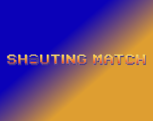

Shouting Match
Use your voice to fight your way to victory.

Role:Programming Intern
Game Type: Research Game/ Alternative Controller Game
This was my first ever internship and I am glad to have experienced it. Alongside some amazing game developers, we made an alternative controller fighting game where your audio/ mic input mattered and contributed to the game. So far we designed and made 2 playable characters as a proof of concept.
This project opened my eyes to what internships actually looked like and made me excited since I was finally breaking into the industry.